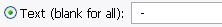
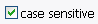
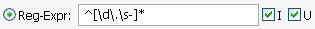
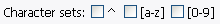
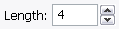
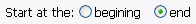
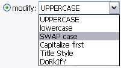
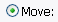
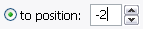
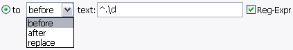

A very powerful tool to search names and then modify the match in some way. Most operations are done using this. You can search a name for a certain text, using a regular expression, or by position. You can then replace this text completly, change its case, or move it to another location.

The text to search for. You may enter in any character, so to seach for a space,
simply press the spacebar. If this field is left blank than the entire name is matched.

Makes the text search case-sensitive.

Search for a regular expression. Every match will be acted upon. Having I checked
makes the search case insensitive, U matches in Unicode mode (to match non-ascii
characters such as 'é' with things like \w).

Search for a regular expression character set. ^ will match any character NOT in the set,
[a-z] matches all alpabetical characters (upper AND lower case), and [0-9] matches all
numbers.
You may use these without defining a regular expression. Otherwise the RE is compiled as such:
'(regular expression) | (character sets)'.
Also [a-z] is not really '[a-z]', it is '[^\W\d]' for proper matching in Unicode mode.
Click this to see a regular expression quick reference. You can keep the help window open and still
access the main program.

Search by position. The first number is where to start searching from. 0 is always the first character
in the name.

How many characters to match. Don't worry if the amount of characters exceeds the length of the name.

Determine wether to match from the begining of the name or the end. If by end, then
the Position value is automatically changed according to the Length.

Replace each match with the specified text or operation. If using regular expressions, you can use
backreferences (i.e. type in "\1" without the quotes).

Modify the case of each match.

Move the first match to a position.

Use a fixed position. 0 makes the match the first character of the name, -1 the last.

Use a specified text as the location of the move. You can set wether to put the match before or
after, or to replace this text. If no match is found, nothing is done. Use of regular expressions
is also permited.